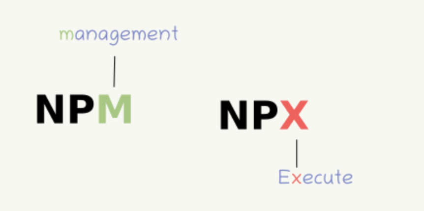

NPM
-
Install/remove library package
-
Package version constrains & package.lock
Overview
-
npm - Node Package Managerlà một công cụ quản lý các library, package cho NodeJs. -
npxlà một công cụ giúp bạn execute các package từ npm registry một cách đơn giản và nhanh chóng.

-
yarn -
nvmlà mộtpackage toolquản lý cácversioncủa Nodejs.
npm Downside
-
Một vài thiếu sót của npm:
-
Queued install: npm down các dependencies từ registry của nó theo cơ chế queue (FIFO), tốn nhiều thời gian. -
Single registry: Có duy nhất 1 npm registry. -
Các vấn đề liên quan đến security: npm cho phép các packages chạy code trong quá trình download.
-
Không hỗ trợ cài đặt offline
-
-
yarn:Node Package Manager, có thể coi là CLI client hỗ trợ việc down các dependencies:-
Cho phép download các package từ NpmJS hoặc Bower
-
Download các dependencies song song với nhau, không chờ đợi như npm.
-
Nếu đã cài 1 package trước đó,
Yarnsẽ tạo một clone trong bộ nhớ cached để hỗ trợ việc cài đặt offline.
-
-
npmbao gồm ba thành phần riêng biệt:- npm website: dùng để discover packages, thiết lập profiles cá nhân hay tổ chức để quản lý quyền truy cập vào các public/private packages.
- npm Command Line Interface: nơi các dev tương tác với npm
- npm registry: public database cho
JavaScript softwarevàmeta-informationcủa npm.
-
Use npm to . . .:- Quản lý packages cho NodeJS app
- Tải xuống đúng cách các
standalone tools - Run packages mà không cần download bằng
npx.